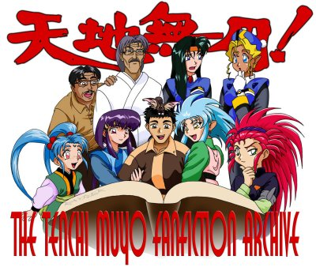

TMFFA T-Shirt Design Contest |
The winner of this contest will win a TMFFA T-Shirt that they have designed. |
Introduction
The TMFFA will be having a T-shirt. But there is a problem, I need a back design. The back of the T-shirt design will be designed by one of you! All you need to do is follow the rules listed below. Anyone is eligible for winning the contest. You are free to send in multiple entries. Jeff Rayder ultimately won the contest.
Rules for Contest
The phrase "The Tenchi Muyo Fan Fiction Archive" must be in the design. But there is no restriction to orientation, colors, format, etc. You have the creative freedom to do what you like. Water colors, CGI, pencil, anything will do.
You may not directly use copyrighted materials/images in the design of your T-shirt. This is because of legal issues. BUT, fan art will be acceptable. E-mail me if you are unclear about this requirement.
Do note that the T-shirt is white. This may have an effect on your overall design.
Send in your final design by October 30, 2000. Be sure to include your Name and E-mail address. You can either scan your work, or mail the art to me. If scanned, you need to be sure that it looks very nice printed out on a full sheet of regular paper. If you do use regularly mail, you should send in your entry early, since it may take time for your work to arrive. It MUST arrive by October 30th. Send entries electronically to gensao@tmffa.com or by regular mail to:
Aldrich "GenSao" Bautista
c/o TMFFA T-shirt Contest
707 Sycamore Lane #103
Davis, CA 95616
You also need to agree that the design you submit, will now become the property of Aldrich "GenSao" Bautista, and that he can use the images on the TMFFA and on the T-Shirt.
The Prize
The Artist will receive a free TMFFA T-shirt as their reward for wining the contest. The winning design will then be used on the back of the T-Shirt. Also the winning image will be used on the Main start up page for the TMFFA.
How winner will be decided
Since this is a T-Shirt for you the TMFFA patron, I have decided that you all will decide which design will win. A few days after the final design is submitted. I will display all the artwork on a special page where you will E-mail me your choice. Please one vote per person. I will only accept E-mail votes. You will have a little more than a week to vote once voting begins. You can not vote on your own design. People who preorder will have their vote count 2X in the voting.
After the winner has been decided, The production process will begin. I will send out the shirt that people preordered ASAP. If you like to preorder your TMFFA T-shirt go here.